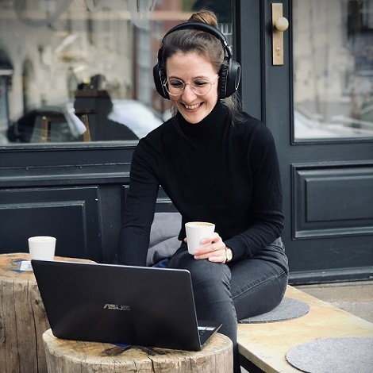

CoffeeCodeBreak is a platform for women who are interested in Tech, want to share their experience, find mentors or learn from each other. We deliberately avoid application procedures or the claim to be particularly exclusive or elite.
This is because we want to offer access to mentoring and a supportive network to all women.
Hi, my name is Caro.
Actually I developed CoffeeCodeBreak because I myself lacked mentors and a professional network.
I noticed the whole thing when I was in the absurd situation of listening to one women-in-tech podcast episode after another to gain the necessary self-confidence for an unpleasant confrontation at work. I simply lacked role models and real mentors with whom I could have directly talked.
Nothing against podacasts - I'm still very grateful for every interview that helped me master the situation. Nevertheless, a real conversation would have been the more efficient and less unidirectional way to find the solution to my specific problem.
However, it has been proven that networks and mentoring can have an enormous influence on our professional success. And that is why we need stronger women's networks.
For a long time I believed that I had to do everything on my own. Whether this is related to me or my experiences described above, I cannot say exactly. I didn't realize how much people enjoy sharing their knowledge and experience. Most people feel very valued when they are asked for help. Usually it is even the case that mentors themselves gain valuable insights through the change of perspective.
The more women in Tech experience this appreciation, grow through it and become visible, the more role models we have. And the more role models we have, the more self-confidently other women take a similar path. For these reasons, it was obvious to not only solve the issue for myself, but to build a platform that can also be used by other women to share their experience and build a network.
<3
Who is behind all this?
Hi, my name is Caro.
Actually I developed CoffeeCodeBreak because I myself lacked mentors and a professional network.
I noticed the whole thing when I was in the absurd situation of listening to one women-in-tech podcast episode after another to gain the necessary self-confidence for an unpleasant confrontation at work. I simply lacked role models and real mentors with whom I could have directly talked.
Nothing against podacasts - I'm still very grateful for every interview that helped me master the situation. Nevertheless, a real conversation would have been the more efficient and less unidirectional way to find the solution to my specific problem.

Looking back, it is not particularly surprising that I lacked a network of supporting women. Women are outnumbered in technical universities.
There are only few female role models in the tech sector. I have also observed again and again that men seem to find it easier to build networks.
I have had the experience of being accepted in male-dominated networks, but often not really integrated in the end.
This starts with Whatsapp groups, where things are shared that I 'don't want to see anyway', which is why I am not invited from the beginning.However, it has been proven that networks and mentoring can have an enormous influence on our professional success. And that is why we need stronger women's networks.
For a long time I believed that I had to do everything on my own. Whether this is related to me or my experiences described above, I cannot say exactly. I didn't realize how much people enjoy sharing their knowledge and experience. Most people feel very valued when they are asked for help. Usually it is even the case that mentors themselves gain valuable insights through the change of perspective.
The more women in Tech experience this appreciation, grow through it and become visible, the more role models we have. And the more role models we have, the more self-confidently other women take a similar path. For these reasons, it was obvious to not only solve the issue for myself, but to build a platform that can also be used by other women to share their experience and build a network.
<3